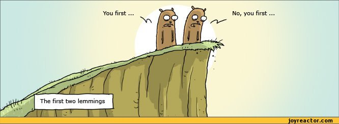

Follow the Leader

Whoever that may be
Why?
- Because I recently came across this problem domain and found it interesting
- I wanted to prove the concept and see how difficult it was to implement (208 lines)
- Kobus was interested in what I did and wanted to see it
- This counts towards my peer review knowledge sharing metric - please remember it ;-)
The Nots
- Not relevant to ECN, apart from being cool in a lame way
- Not proposed to be used at ECN at all
- Not to demo complex theory
- Not to demo edge cases
- Not to discuss reliable task processing during leader and/or
peer disconnects/deaths
This Demo
- Shows a practical implementation of a leadership election algorithm
- ... with a twist
The Various algorithms
“
These algorithms range from simple to incomprehensible. In order to keep your
sanity, implement something simple that you can understand and debug. Anything
more complex will just kick your arse.
”
~ Someone on the internet
Introducing the Bully Algorithm
(because it's simple)
Simply put, the lemming that shouts the loudest gets to be the
leader.
My Implementation
- Asynchronous
- Platform agnostic - mixed language lemmings - even Bash scripts
- No assumptions as to network topology
- No peer knowledge/discovery requirement
- No network size limitation - 1 to millions of lemmings, dependent on the infrastructure
Continued...
- Resilient to network outages and brittle networks (reconnection and patience)
- Self organising communities - coming together and splitting apart
- Coup detection and prevention
But, There's More
(the twist)
>> Task delegation and load balancing <<
We have a leader, so why not have him/her/it make some decisions?
Note: This is not part of the leader election algorithm, but something
I wanted to do.
Only 1 (big) Requirement
Some communications infrastructure that supports the publish/subscribe pattern
My Algorithm
- Seeks out existing leader
- Initiates election when no leader found
- Election is won by lemming with highest random number between 0 and 1000
- Re-election when leader passes on
- Coup detection: leaders commit suicide, forcing new election